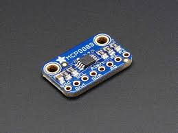

ESP32-WROOM WiFi ve Bluetooth Modülü
32 bit MCU , 2.4 GHz Wi-fi ve TSMC 40nm low power technology Bluetooth çipleri barındırıyor.
ESP32'nin ihmal edilebilir uyku akımı ESP32 (5 μA'dan az), pille çalışan ve giyilebilir
elektronik uygulamalarının çoğuna uygun olmasını sağlar.
ESP-WROOM-32, ölçeklendirilebilir ve uyarlanabilir ESP32-D0WDQ6
yongasını kullanan güçlü, 38 pinli Wi-Fi / Bluetooth / BLE MCU modülüdür.
Bu çip, ultra düşük güç (ULP) ortak işlemcisi ile birlikte çekirdeğinde iki
adet düşük güçlü Xtensa 32 bit LX6 mikroişlemci içerir. İki CPU çekirdeği ayrı
ayrı kontrol edilebilir ve saat frekansı 80 MHz ila 240 MHz arasında ayarlanabilir.
Kullanıcı aynı zamanda CPU'ları kapatabilir ve A / D dönüşümlerini ele almak ve eşik
değerlerinde veya geçişlerindeki değişiklikler için çevre birimleri izlemek için ULP
yardımcı işlemcisinden yararlanabilir.
MAX30100 KALP NABIZ SENSÖRÜ
MAX30100 içerdiği kırmızı ve kızılötesi LED' lerden ışık yayarak ve bu
ışığın yansımasından ölçüm alarak çalışır. Bu LED kombinasyonu nabız ölçümü için
en uygun rengi sağlamaktadır. LED'lerden gelen sinyal, bir mikroişlemci tarafından
işlenir ve hedef mikrokontrolcüye I2C hattı üzerinden gönderilir. Besleme gerilimi 3.3V'tur.
MCP9808 SICAKLIK SENSÖRÜ

MPU6050 I2C protokolüyle haberleşen 3 eksenli bir gyro ve 3 eksenli bir açısal
ivme ölçer bulunduran 6 eksenli bir IMU sensörüdür. Kart 3 ile 5 V arası bir besleme
voltajı ile çalıştırılabilir. İvme ölçer ve gyro çıkışlarının her ikisi de ayrı kanallardan
I²C çıkışı vermektedir. Her eksende 16 bitlik bir çözünürlükle çıkış verebilmektedir.
MPU6050 AÇI İVME JİRESKOP SENSÖRÜ
MPU6050 I2C protokolüyle haberleşen 3 eksenli bir
gyro ve 3 eksenli bir açısal ivme ölçer bulunduran 6
eksenli bir IMU sensörüdür. Kart 3 ile 5 V arası bir besleme
voltajı ile çalıştırılabilir. İvme ölçer ve gyro çıkışlarının
her ikisi de ayrı kanallardan I²C çıkışı vermektedir. Her eksende 16 bitlik bir çözünürlükle çıkış verebilmektedir.
CA9548A I2C Multiplexer
TCA9548A modülü, aynı I2C adresine sahip 8 adet kartı aynı anda kullanabilecek yapıya sahip bir çoklayıcıdır.
I2C sensör gibi kartların I2C adresleri değiştirilebilir yapıda değilse ve çoklu kullanıma ihtiyaç duyuluyor ise kullanılabilir.